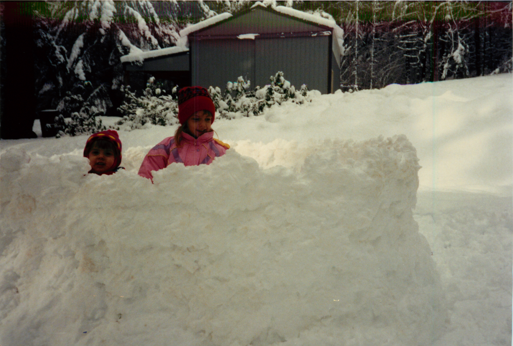

1993 - 1996

Snow, take a chill pill
- From 1994-96 we lived first in New York, then Conneticut. My dad moved us there for a business opportunity which eventually fell through.
- Unlike the relatively mild winters in Oregon, it snowed all the time. We had to bring snowsuits to school.
- My sister pushed me into a pond on our property to "see if I would float." I did not, but at least the question was answered for science.